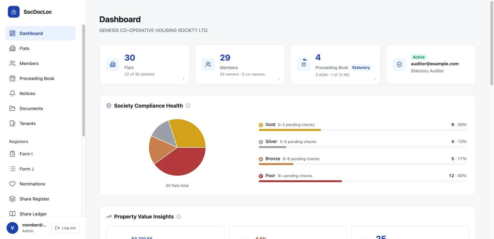
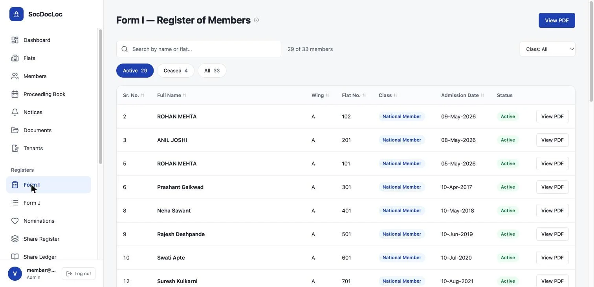

SocDocLoc
Statutory registers for co-operative housing societies in Maharashtra, moved off paper and on to a platform that auditors can review online.

The problem
Every co-operative housing society has to keep statutory registers under the Maharashtra Co-operative Societies Act and its bye-laws: members, shares, nominations, meetings and property. Most keep them in paper books or loose spreadsheets. When audit time comes, the committee spends weeks chasing records, and a weak register costs the society its audit grade.
The goal I set was simple to say and hard to do: a Class A audit classification for every society that uses it.
Decisions that shaped it
- A separate database for every society. The subdomain picks the database connection, so one society's data can never leak into another's through a missed filter.
- Sign-in by one-time code, no passwords. Committee members and flat owners are not technical users, and nobody has to remember anything.
- Members verify their own records. The committee doesn't have to type in everything. Each owner checks and confirms their entry, and the auditor reviews it online.
- Registers print the way the law expects. Form I, Form J, the share register and the rest come out as print-ready PDFs.
- Safe releases. A new look ships first on a separate address for each society. The old one stays the default until it has been checked.

Form I, the register of members. Names here are sample data.
How I built it
I built it alone, with Claude Code, but in strict steps. The spec is the source of truth. Tests are written first from the acceptance criteria and locked. The session that writes the code never writes its own tests. A fresh session reviews the result. My earlier attempts without this discipline went badly, and that story became my talk at Caizin.
What went wrong
- Autosave. I built autosave, and society admins didn't trust it. They wanted a Save button they could press, so I took autosave out.
- Layout by trial and error. The society website editor went through several build-and-measure rounds. The lesson: settle a layout in a browser mock-up before writing the real thing.
- Hosting scripts. The first rehearsals of the console deployment failed three times, on three different AWS settings. Each fix went into the script, so it can't happen again.
Where it is now
Live on AWS, with two housing societies (120 flats) on it. Both received a Class A audit grade. A refreshed design went live in November 2026.